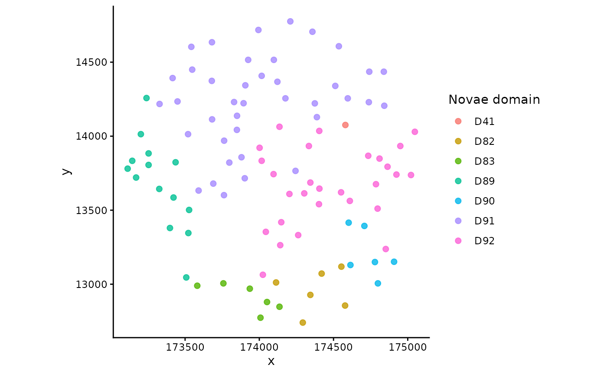

Running Novae foundational model
06/27/2026
novae.RmdAbstract
This package takes an h5ad file with the gene count matrix and spatial coordinates as input, runs Novae, creating the Python environment automatically, and returns an annDataR object with the embeddings and domains (spatial clusters).
## Loading required package: SingleCellExperiment## Loading required package: SummarizedExperiment## Loading required package: MatrixGenerics## Loading required package: matrixStats##
## Attaching package: 'MatrixGenerics'## The following objects are masked from 'package:matrixStats':
##
## colAlls, colAnyNAs, colAnys, colAvgsPerRowSet, colCollapse,
## colCounts, colCummaxs, colCummins, colCumprods, colCumsums,
## colDiffs, colIQRDiffs, colIQRs, colLogSumExps, colMadDiffs,
## colMads, colMaxs, colMeans2, colMedians, colMins, colOrderStats,
## colProds, colQuantiles, colRanges, colRanks, colSdDiffs, colSds,
## colSums2, colTabulates, colVarDiffs, colVars, colWeightedMads,
## colWeightedMeans, colWeightedMedians, colWeightedSds,
## colWeightedVars, rowAlls, rowAnyNAs, rowAnys, rowAvgsPerColSet,
## rowCollapse, rowCounts, rowCummaxs, rowCummins, rowCumprods,
## rowCumsums, rowDiffs, rowIQRDiffs, rowIQRs, rowLogSumExps,
## rowMadDiffs, rowMads, rowMaxs, rowMeans2, rowMedians, rowMins,
## rowOrderStats, rowProds, rowQuantiles, rowRanges, rowRanks,
## rowSdDiffs, rowSds, rowSums2, rowTabulates, rowVarDiffs, rowVars,
## rowWeightedMads, rowWeightedMeans, rowWeightedMedians,
## rowWeightedSds, rowWeightedVars## Loading required package: GenomicRanges## Loading required package: stats4## Loading required package: BiocGenerics## Loading required package: generics##
## Attaching package: 'generics'## The following objects are masked from 'package:base':
##
## as.difftime, as.factor, as.ordered, intersect, is.element, setdiff,
## setequal, union##
## Attaching package: 'BiocGenerics'## The following objects are masked from 'package:stats':
##
## IQR, mad, sd, var, xtabs## The following objects are masked from 'package:base':
##
## anyDuplicated, aperm, append, as.data.frame, basename, cbind,
## colnames, dirname, do.call, duplicated, eval, evalq, Filter, Find,
## get, grep, grepl, is.unsorted, lapply, Map, mapply, match, mget,
## order, paste, pmax, pmax.int, pmin, pmin.int, Position, rank,
## rbind, Reduce, rownames, sapply, saveRDS, table, tapply, unique,
## unsplit, which.max, which.min## Loading required package: S4Vectors##
## Attaching package: 'S4Vectors'## The following object is masked from 'package:utils':
##
## findMatches## The following objects are masked from 'package:base':
##
## expand.grid, I, unname## Loading required package: IRanges## Loading required package: Seqinfo## Loading required package: Biobase## Welcome to Bioconductor
##
## Vignettes contain introductory material; view with
## 'browseVignettes()'. To cite Bioconductor, see
## 'citation("Biobase")', and for packages 'citation("pkgname")'.##
## Attaching package: 'Biobase'## The following object is masked from 'package:MatrixGenerics':
##
## rowMedians## The following objects are masked from 'package:matrixStats':
##
## anyMissing, rowMedians
library(fomo)
spe <- readRDS(
system.file("extdata", "CosMx1k_MouseBrain1_100tx_100cl.rds", package = "fomo")
)Prepare h5ad file for Novae
spatialCoords(spe) |> as.data.frame() -> coords_df
colData(spe)$x_coord <- coords_df[, 1]
colData(spe)$y_coord <- coords_df[, 2]
reducedDim(spe, "spatial") <- as.matrix(spatialCoords(spe))## Warning in .check_reddim_names(x, value, withDimnames): non-NULL 'rownames(value)' should be the same as 'colnames(x)' for
## 'reducedDim<-'. This will be an error in the next release of
## Bioconductor.
adata <- as_AnnData(spe)
colnames(adata$obsm$spatial) <- c("x_coord", "y_coord")
# write anndata to tempfile
adata$write_h5ad(
tp <- tempfile(fileext = ".h5ad"),
mode = "w"
)## Warning: Matrix column names cannot be written to a <HDF5AnnData> object, they will be
## lost
## ℹ To write column names for obsm[['spatial']], store it as <data.frame> instead
## of a double matrix
## ℹ NOTE: obs_names and var_names are stored separatelyRun Novae
novae_data <- Run_novae(tp, accelerator = "cpu")## Using Python: /home/runner/.pyenv/versions/3.13.0/bin/python3.13
## Creating virtual environment '/home/runner/.cache/R/basilisk/1.24.0/fomo/0.1.0/novae' ...## + /home/runner/.pyenv/versions/3.13.0/bin/python3.13 -m venv /home/runner/.cache/R/basilisk/1.24.0/fomo/0.1.0/novae## Done!
## Installing packages: pip, wheel, setuptools## + /home/runner/.cache/R/basilisk/1.24.0/fomo/0.1.0/novae/bin/python -m pip install --upgrade pip wheel setuptools## Installing packages: 'novae==1.0.4'## + /home/runner/.cache/R/basilisk/1.24.0/fomo/0.1.0/novae/bin/python -m pip install --upgrade --no-user 'novae==1.0.4'## Virtual environment '/home/runner/.cache/R/basilisk/1.24.0/fomo/0.1.0/novae' successfully created.
novae_data$obsm$novae_latent |> head()## [,1] [,2] [,3] [,4] [,5] [,6] [,7]
## [1,] -0.2206713 -0.1948624 0.2965667 -0.3148142 -0.1687927 0.1192101 0.02435192
## [2,] -0.1987474 -0.1711040 0.2242430 -0.2955740 -0.1583273 0.1428701 0.09007882
## [3,] -0.1578677 -0.1339747 0.1397619 -0.2611345 -0.1203691 0.1192092 0.19522530
## [4,] -0.2541407 -0.1826829 0.2893392 -0.3563252 -0.1462332 0.1339565 0.03723289
## [5,] -0.1472132 -0.1308305 0.1445841 -0.2681801 -0.1631793 0.1175911 0.19167651
## [6,] -0.1638550 -0.1640675 0.2201154 -0.1734857 -0.1190966 0.2077205 0.12432335
## [,8] [,9] [,10] [,11] [,12] [,13]
## [1,] -0.4809723 0.3771157 -0.3747700 0.17796710 -0.07873699 0.06784782
## [2,] -0.5155444 0.3991545 -0.4447341 0.13445082 -0.04978344 0.03467902
## [3,] -0.5394382 0.4199651 -0.4507078 0.07626744 -0.05818300 -0.06463379
## [4,] -0.4957179 0.3382913 -0.4281863 0.15746695 -0.07740281 0.01549539
## [5,] -0.5315458 0.3993767 -0.4070585 0.04987458 -0.02416511 0.02775201
## [6,] -0.4781094 0.5145270 -0.4376453 0.12087689 -0.07237742 -0.05085580
## [,14] [,15] [,16] [,17] [,18] [,19]
## [1,] 0.06193200 -0.2776226 0.2101763 0.09354842 0.01656753 -0.2808516
## [2,] 0.04028913 -0.2452490 0.2116284 0.08020574 0.05415539 -0.3349988
## [3,] -0.01513870 -0.2180043 0.1477644 0.05226972 0.08693189 -0.3479760
## [4,] 0.07137828 -0.2718902 0.2127382 0.05708726 -0.01107322 -0.2561911
## [5,] -0.04258646 -0.1703214 0.1316394 0.08500014 0.15264994 -0.4098507
## [6,] 0.09090404 -0.2259780 0.2330109 0.10350331 -0.02245479 -0.2832670
## [,20] [,21] [,22] [,23] [,24] [,25]
## [1,] -0.10971545 0.17704442 -0.0151029676 -0.2034124 -0.3316054 -0.4515730
## [2,] -0.01757555 0.12113792 0.0003164972 -0.1959823 -0.3022393 -0.3728123
## [3,] 0.10116974 0.05748598 0.0700874627 -0.1247839 -0.2211906 -0.2549199
## [4,] -0.08210125 0.18829642 -0.0260123760 -0.1589638 -0.3153207 -0.4463110
## [5,] 0.12241317 0.04002663 0.0994467661 -0.1498288 -0.2564330 -0.2539629
## [6,] -0.08340008 0.11624511 -0.0460088551 -0.1858038 -0.2648138 -0.3501173
## [,26] [,27] [,28] [,29] [,30] [,31]
## [1,] -0.2999115 0.24593961 -0.5472380 -0.4963783 -0.2753869 0.1045754
## [2,] -0.2547390 0.16315530 -0.5042843 -0.5126286 -0.2288688 0.1901216
## [3,] -0.2184913 0.09546140 -0.4926718 -0.5465044 -0.1789342 0.3169108
## [4,] -0.3115001 0.23830582 -0.5768309 -0.4935045 -0.2547576 0.1384496
## [5,] -0.1644807 0.09877725 -0.4832129 -0.5770077 -0.1954557 0.3139147
## [6,] -0.2904322 0.15109900 -0.4364410 -0.4864624 -0.2548792 0.1504585
## [,32] [,33] [,34] [,35] [,36] [,37]
## [1,] -0.12541017 0.13598081 0.1614530 -0.4078670 -0.4299824 -0.12952864
## [2,] -0.05431028 0.09991452 0.2240430 -0.3792202 -0.3913248 -0.12228191
## [3,] 0.04323644 0.03724714 0.3043859 -0.4078553 -0.3398322 -0.10812227
## [4,] -0.12562470 0.08406526 0.1616980 -0.4618452 -0.3825650 -0.07823852
## [5,] 0.02190625 0.07191136 0.3129115 -0.3615820 -0.3501123 -0.16936882
## [6,] -0.03703557 0.11789272 0.2555453 -0.3359212 -0.4471228 -0.08731611
## [,38] [,39] [,40] [,41] [,42] [,43]
## [1,] -0.1230499 -0.3117329 -0.3697579 0.2424386 -0.10974421 -0.14856103
## [2,] -0.1351274 -0.2892747 -0.3498486 0.2272640 -0.17106234 -0.13252646
## [3,] -0.1623190 -0.2039573 -0.3254032 0.1663351 -0.20718041 -0.14163563
## [4,] -0.1823529 -0.3015721 -0.3661372 0.2204899 -0.09742363 -0.12566875
## [5,] -0.1453486 -0.1868508 -0.3226482 0.1803892 -0.21580082 -0.16055293
## [6,] -0.1119257 -0.3113563 -0.4100002 0.3177450 -0.18950298 -0.07309324
## [,44] [,45] [,46] [,47] [,48] [,49] [,50]
## [1,] 0.2935587 0.4073026 0.3509955 -0.07550124 0.2242881 -0.6085772 -0.2688728
## [2,] 0.2911592 0.4397125 0.3178465 -0.08994332 0.2092296 -0.5650828 -0.2481026
## [3,] 0.2539871 0.4537084 0.2659539 -0.17160934 0.2412108 -0.5702531 -0.2856447
## [4,] 0.2858937 0.3796625 0.3556438 -0.06907346 0.1928674 -0.5697238 -0.2915676
## [5,] 0.2841707 0.4836324 0.2325027 -0.17392702 0.2694346 -0.5749384 -0.2393098
## [6,] 0.2663063 0.4386691 0.3788696 -0.05970408 0.1592198 -0.5322598 -0.2275554
## [,51] [,52] [,53] [,54] [,55] [,56] [,57]
## [1,] -0.6406319 0.2315724 -0.2857048 -0.3523355 0.3764078 0.2506931 0.08686079
## [2,] -0.6496974 0.2896172 -0.2622664 -0.3662820 0.3274877 0.2575547 -0.01190569
## [3,] -0.5739384 0.3619353 -0.2779187 -0.3480078 0.2876459 0.2163471 -0.13259570
## [4,] -0.6062612 0.2500856 -0.3052689 -0.3185174 0.3377666 0.2263064 0.05821951
## [5,] -0.6153062 0.4037802 -0.2434537 -0.3748485 0.3050462 0.2174993 -0.15498655
## [6,] -0.6706799 0.1795600 -0.2701448 -0.4477570 0.3390155 0.3124681 0.05191613
## [,58] [,59] [,60] [,61] [,62] [,63] [,64]
## [1,] 0.3743704 0.2688178 0.4371806 0.3862094 -0.3297670 -0.2132023 -0.15362294
## [2,] 0.3928404 0.2447246 0.3887894 0.3127444 -0.3445785 -0.2763596 -0.13266534
## [3,] 0.4034514 0.2775198 0.2772588 0.2081814 -0.3225631 -0.2930600 -0.02160793
## [4,] 0.3565684 0.2857149 0.4167833 0.3745218 -0.3027126 -0.2008608 -0.08339985
## [5,] 0.3935176 0.2492470 0.3038692 0.2097731 -0.3204198 -0.3132808 -0.12235089
## [6,] 0.4469868 0.2056279 0.3304684 0.2662622 -0.3707758 -0.2479457 -0.06203981Plotting spatial coordinates coloured by Novae’s defined clusters (domains)
library(ggplot2)
plot_df <- data.frame(
x = novae_data$obs$x_coord,
y = novae_data$obs$y_coord,
domain = as.factor(novae_data$obs$novae_domains_7)
)
ggplot(plot_df, aes(x = x, y = y, color = domain)) +
geom_point(size = 2, alpha = 0.8) +
coord_fixed() +
theme_classic() +
labs(x = "x", y = "y", color = "Novae domain")
## R version 4.6.1 (2026-06-24)
## Platform: x86_64-pc-linux-gnu
## Running under: Ubuntu 24.04.4 LTS
##
## Matrix products: default
## BLAS: /usr/lib/x86_64-linux-gnu/openblas-pthread/libblas.so.3
## LAPACK: /usr/lib/x86_64-linux-gnu/openblas-pthread/libopenblasp-r0.3.26.so; LAPACK version 3.12.0
##
## locale:
## [1] LC_CTYPE=C.UTF-8 LC_NUMERIC=C LC_TIME=C.UTF-8
## [4] LC_COLLATE=C.UTF-8 LC_MONETARY=C.UTF-8 LC_MESSAGES=C.UTF-8
## [7] LC_PAPER=C.UTF-8 LC_NAME=C LC_ADDRESS=C
## [10] LC_TELEPHONE=C LC_MEASUREMENT=C.UTF-8 LC_IDENTIFICATION=C
##
## time zone: UTC
## tzcode source: system (glibc)
##
## attached base packages:
## [1] stats4 stats graphics grDevices utils datasets methods
## [8] base
##
## other attached packages:
## [1] ggplot2_4.0.3 fomo_0.1.0
## [3] SpatialExperiment_1.22.0 SingleCellExperiment_1.34.0
## [5] SummarizedExperiment_1.42.0 Biobase_2.72.0
## [7] GenomicRanges_1.64.0 Seqinfo_1.2.0
## [9] IRanges_2.46.0 S4Vectors_0.50.1
## [11] BiocGenerics_0.58.1 generics_0.1.4
## [13] MatrixGenerics_1.24.0 matrixStats_1.5.0
## [15] anndataR_1.2.0
##
## loaded via a namespace (and not attached):
## [1] gtable_0.3.6 dir.expiry_1.20.0 rjson_0.2.23
## [4] xfun_0.59 bslib_0.11.0 rhdf5_2.56.0
## [7] lattice_0.22-9 rhdf5filters_1.24.0 vctrs_0.7.3
## [10] tools_4.6.1 parallel_4.6.1 tibble_3.3.1
## [13] pkgconfig_2.0.3 Matrix_1.7-5 RColorBrewer_1.1-3
## [16] S7_0.2.2 desc_1.4.3 lifecycle_1.0.5
## [19] compiler_4.6.1 farver_2.1.2 textshaping_1.0.5
## [22] htmltools_0.5.9 sass_0.4.10 yaml_2.3.12
## [25] pillar_1.11.1 pkgdown_2.2.0 jquerylib_0.1.4
## [28] DelayedArray_0.38.2 cachem_1.1.0 magick_2.9.1
## [31] abind_1.4-8 basilisk_1.24.0 tidyselect_1.2.1
## [34] digest_0.6.39 dplyr_1.2.1 purrr_1.2.2
## [37] labeling_0.4.3 fastmap_1.2.0 grid_4.6.1
## [40] cli_3.6.6 SparseArray_1.12.2 magrittr_2.0.5
## [43] S4Arrays_1.12.0 withr_3.0.3 filelock_1.0.3
## [46] scales_1.4.0 rappdirs_0.3.4 rmarkdown_2.31
## [49] XVector_0.52.0 otel_0.2.0 reticulate_1.46.0
## [52] ragg_1.5.2 png_0.1-9 evaluate_1.0.5
## [55] knitr_1.51 rlang_1.2.0 Rcpp_1.1.1-1.1
## [58] glue_1.8.1 jsonlite_2.0.0 R6_2.6.1
## [61] Rhdf5lib_2.0.0 systemfonts_1.3.2 fs_2.1.0